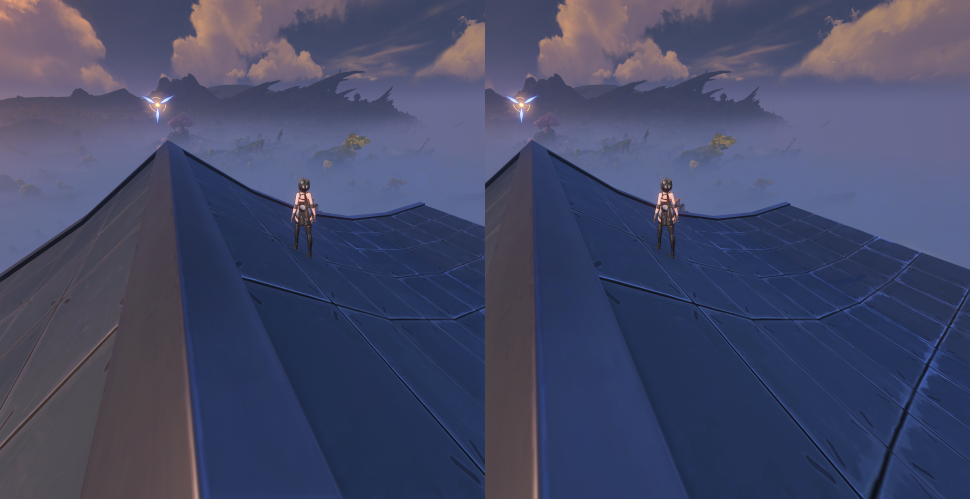
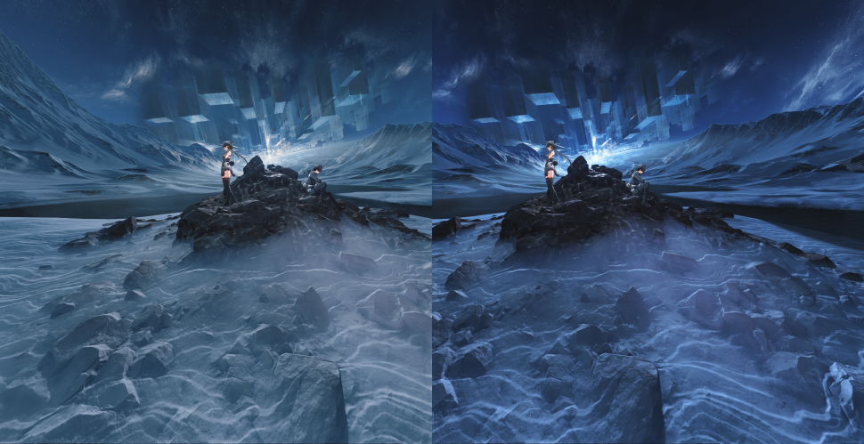
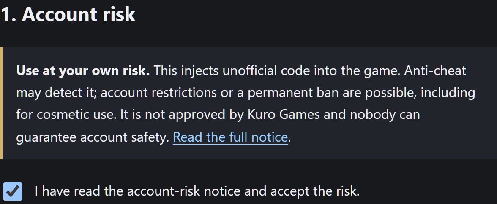
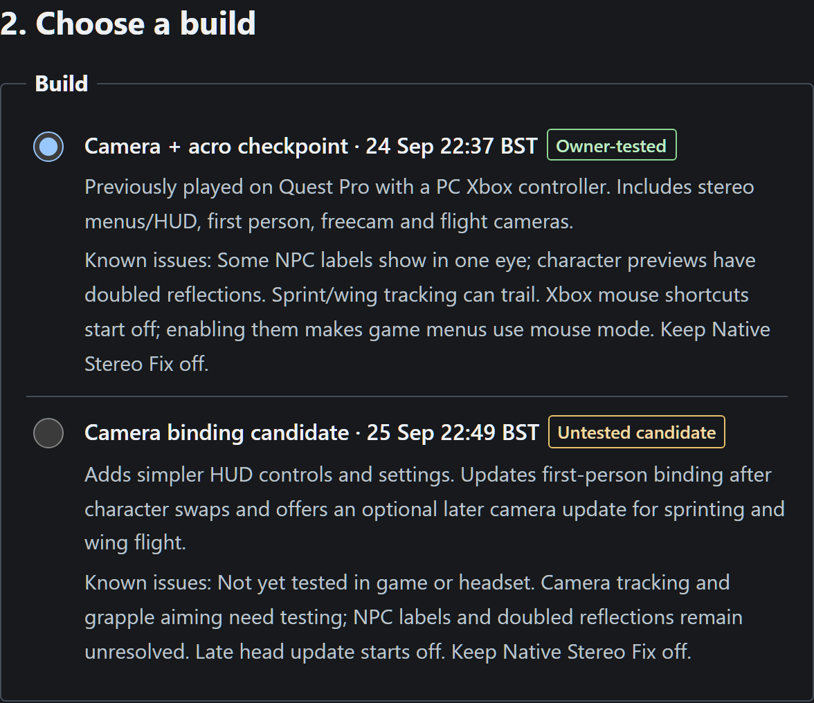
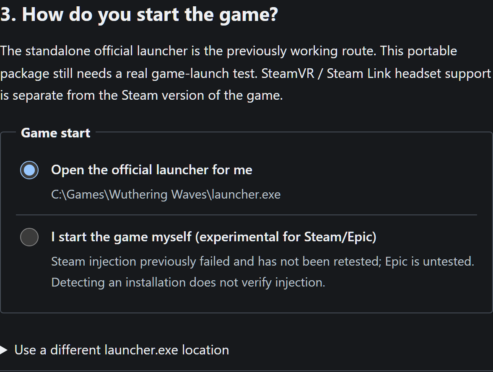
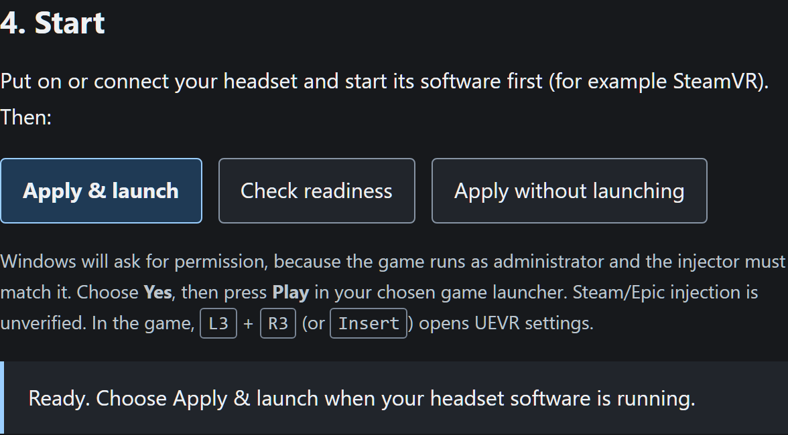

Diese Seite ist eine Übersetzung des englischen Originals, das bei Abweichungen maßgeblich ist. Noch nicht übersetzte Teile erscheinen auf Englisch. English
WuWa VR
Spiele Wuthering Waves in VR mit einem PC-Headset. Eine kostenlose Fan-Mod auf Basis von praydogs UEVR, betreut von ChronoHaxx.
Herunterladen · 1 Oct 18:17 BST · Windows-ZIP Versionshinweise und Quellcode
Für Spielversion 3.7 · etwa 51 MB · portabel, keine Installation
Neu: Ferne Bäume, Objekte und Beleuchtung stimmen jetzt in beiden Augen überein, und die Spiegelungen auf dem Resonatoren- und dem Team-Bildschirm sind wieder an der richtigen Stelle.
So sieht es aus
Kurze Clips aus Headset-Aufnahmen; nichts startet automatisch.
Weitere Stereo-Ansichten


So geht's los

Öffne WuWa VR Launcher.exe im entpackten Ordner. Lies den Hinweis zum Kontorisiko und setze den Haken. 
Prüfe den ausgewählten Build. Jeder Download enthält einen Build. 
Wähle, wie du das Spiel startest. Der offizielle Launcher ist der getestete Weg; die Steam- und Epic-Versionen sind ungetestet. 
Starte die Software deines Headsets und klicke dann auf Apply & launch. Bestätige die Windows-Berechtigungsabfrage und klicke auf Spielen.


Launcher-Screenshots vom September 2026; deine Seite kann leicht anders aussehen.
In VR öffnet L3 + R3 die Einstellungen und L3 + Menu zeigt die Tastenübersicht. Vollständige Schritte für Einrichtung, Update und Entfernen.
Funktionen
- Stereo-VR mit Kopf-Tracking, mit dem HUD und den Menüs des Spiels selbst.
- Xbox-Steuerung mit einer Tastenübersicht in VR und einem einstellbaren HUD.
- Ego-Perspektive mit sichtbarem Körper und ausgeblendetem Kopf, dazu ein Komfortmodus.
- Freie Kamera: Flug-, Drohnen-, Flugzeug- und Akro-Kameras.
- Optionales 6DOF-Fenster, angepasst nach der Arbeit von Elliott Tate.
- Gleiche Augen: Ferne Bäume, Objekte und Beleuchtung sowie Spiegelungen auf Charakterbildschirmen sehen in beiden Augen gleich aus.
- Aufnahme von Stereo-Video nebeneinander direkt im Launcher.
Mitwirkende
Aufgebaut auf der Arbeit von praydog und den UEVR-Mitwirkenden, mirudo2, polar, SannpoKun, Indath, endlessfalls und Elliott Tate. Beiträge und Lizenzen.
Forks und Verbesserungen sind willkommen, soweit die Lizenzen es erlauben. Bitte halte es kostenlos und nenne die Urheber. Lizenz und Weitergabe.